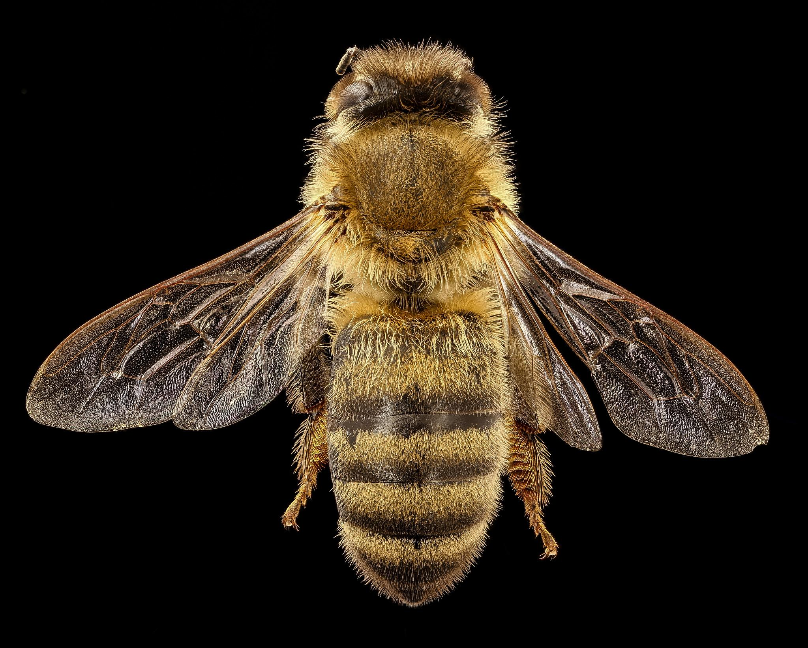

Trúdy majú telo dlhé 15 - 17 mm a vážia okolo 220 mg. Liahnu sa z neoplodnených vajíčok, ktoré matka kladie do trúdích buniek odlišujúcich sa od robotníčích buniek len väčšou veľkosťou.Na sklonku leta včely vyháňajú trúdy z úľov, takže v zime vo včelstvách trúdy nie sú.Vývojové štádium trúdov trvá 24 dní. Z toho je 3 dni vajíčko, 7 dní larva a 14 dní kukla. Trúdy sa stávajú rujnými na 8. - 13. deň po vyliahnutí. Ich jediným poslaním je oplodniť matku. Za nepriaznivého počasia a pri nedostatku znášky ich včely z úľa odstraňujú. Vyháňanie trúdov možno pozorovať najmä na konci leta, keď sa skončí znáška.
